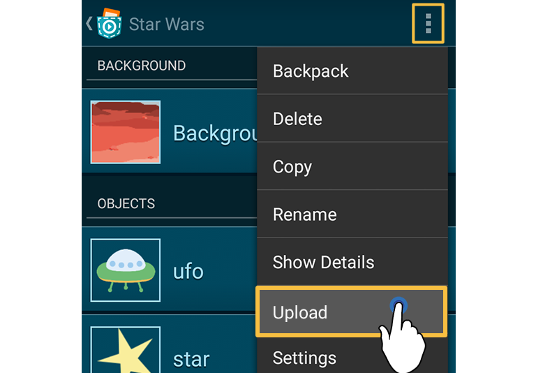
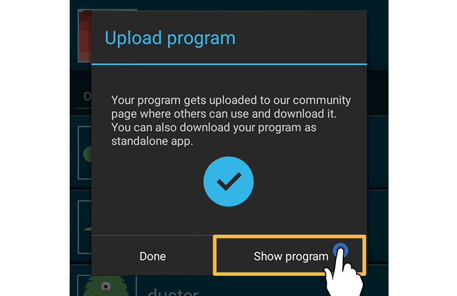

About
Heroes of the Universe Game Jam
Grab your smartphone and save the universe! With Pocket Code you can create your very own smartphone application. We invite you and your friends to create a game, animation or any kind of other app using Pocket Code! Together you can save the galaxy. All projects will be available on our website.
Details
To submit your project simply upload it and put the hashtag #hotu into your project description or title. There will be no competition, this game jam is simply for fun and for you to challenge yourself and try out new things. Feel encouraged to take part and share your journey with others!
Theme
It's all about your mission to save the universe! Create your own games and stories about your personal heroes and save the universe. You can find many space-themed assets in our media library, or you can make your own. If you want to use any assets from the internet be sure to check whether they are free to use or not, check the FAQs for further help!


How can I participate?
Head over to our Discord server to connect with other people to program together or just to share ideas!
How do I learn coding?
If you don’t have any experience in coding, don’t be afraid, it’s easier than you think! The “Help” button inside the Pocket Code app guides you to a tutorial overview where we have provided some great examples for beginners. Furthermore, there is a big community behind Pocket Code that provides a huge set of existing projects on the web from which you can draw inspiration. You can find them by clicking the “Catrobat community” button inside the Pocket Code app.
Submission
After you have finished your app, upload it to our Catrobat community page in order to submit it. You can easily achieve this by clicking on the top menu.

After you have logged in or registered yourself, the upload dialog is shown. There you can change the name of your game and also add a description. Please include the hashtag #hotu at the end of the long description of your project, or we will not be able to find your project! After you hit 'Upload' a dialog is shown, which will tell you if your upload has succeded. Now you can view your uploaded project on our community site. Tap on 'Show project'.

Now you can see your project on our community site.
To share a link to your project, tap on "Link" on your project's detail page below the image.
If you want to see all submissions follow this link.
First steps and rules
First, let’s have a look at the media library in which we provided some awesome graphics for you. You can use them to make your project more colorful and they will give you some good ideas for your app. Of course you can draw your own images or use looks you find in other Catrobat projects. You also may use third-party graphics, but please respect copyrights and licenses. Same also for sounds and music.
After having a look at our media gallery you will need an idea. You will have to think about what kind of project (game, animation, etc.) you want to create, and try to relate it to the theme of Heroes of the Universe. You might even already have some great ideas after having a look at the media assets.
In order to make your app even more interesting you can implement some of the following features (they are optional, and not all will fit to every project):
★ A welcome screen
★ A short description
★ A "You have won!" screen
★ A game-over screen
★ Sounds or music
★ Sensors
★ A second level
★ Collisions
★ A foreign language
FAQ
Frequently Asked Questions
What is "Pocket Code"
Pocket Code is a free visual programming app for smartphones. It enables you to create your own games, animations or stories with easy to use bricks, without any previous knowledge, directly on your device. You want to know more about it? Visit www.catrobat.org.
How to learn coding?
To guide you a little bit we provide some special tutorials on our wiki. There you can find some interesting examples, step by step tutorials and additional materials that will help you with your first project!
Is it for free?
Participating at the Heroes of the Universe Game Gam is absolutely free!
Pocket Code also is available for free on Google Play, the iPhone App Store, as well as on Huawei's AppGallery, and does not include any in-App purchases, ads, or other costs. Have fun with Pocket Code!
Where can I find all submissions?
You can either search all submissions manually by going to our share platform and searching for the hashtag #hotu or just directly follow this link!
Who is behind Pocket Code?
Pocket Code is developed by the non-profit International Catrobat Association. More than 1000 people have already contributed to this Free Open Source Software project and thus helped to make coding as easy as possible. Get more information about Catrobat on www.catrobat.org.
What media content can I use?
We don't want to limit your creativity in any way, hence there are no requirements by us. However, please respect the copyrights of others and don't use any media content without permission. You can find a lot of great media assets available under Creative Commons Licenses in other projects on our community site which you can all freely use, or you can go to a public site that offers such content, e.g., on search.creativecommons.org.
Where can I find more information about the licenses of this event?
All projects that are submitted to the Heroes of the Universe Game Jam are available under Free Open Source and Creative Commons licenses. These licenses allow the usage and adaption of all content, as long as they are correctly attributed and are published under the same licenses.
Find more detailed information on the page "Licenses of uploaded Catrobat projects".
What do I have to consider for participating at the game jam?
Please just follow the instructions above. That's it!
How can I submit my project?
To submit your project just upload it as usual and do not forget to include the hashtag #hotu so we are able to find your project!
What's going to happen after I've submitted my project?
After the submission process you can find your project on our share platform, where you can share it with your friends and family.
Are there any prizes involved?
The greatest prize there is are the friends we make and the knowledge we gain along the way!
Through your participation, you have already gained knowledge and new skills that can be worth an infinite amount of money in your future life. Know that Bill Gates, Mark Zuckerberg, Jeff Bezos, and Elon Musk all started by creating small games while they were teenagers. We do not offer rewards or prizes for the Heroes of the Universe Game Jam, as that would defeat its purpose since we cannot give material prizes to everyone --- instead, the satisfaction of having created something awesome by yourself, for your friends and family, as well as for the world at large, is the greatest reward you can give yourself.
How can I get in touch with you?
If you have any further questions, or just want to write to us, please use the Social Media or Contact links at the social media section of this page!
How can I support you?
To make this event as popular as possible, please share it with your friends, family, or social media contacts.
If you want to get even more actively involved, e.g., by helping to translate our web pages, apps, or the poster in your language, please get in touch with us directly!
Can I participate together with my friends? Or can I participate with my class?
Working together is one of the most important aspects of programming. We encourage you to work together and share ideas in whatever way you like. We are also looking forward to seeing school classes participating in the Heroes of the Univers Game Jam!
How can I promote this event in my community?
You are very welcome to share this website and reshare our social media postings!